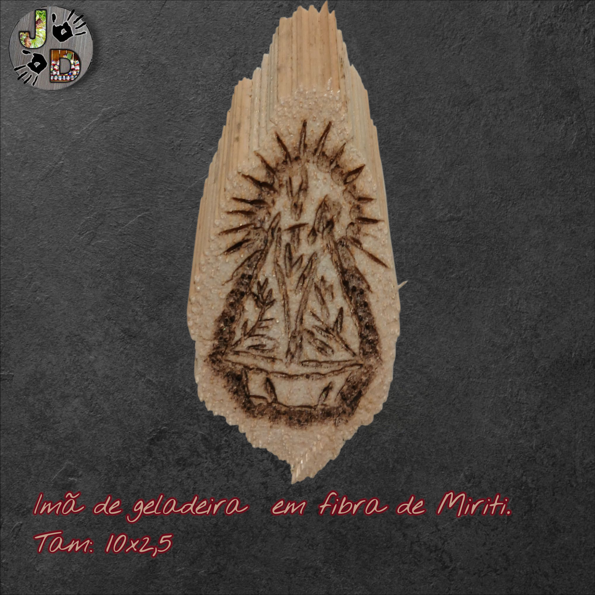
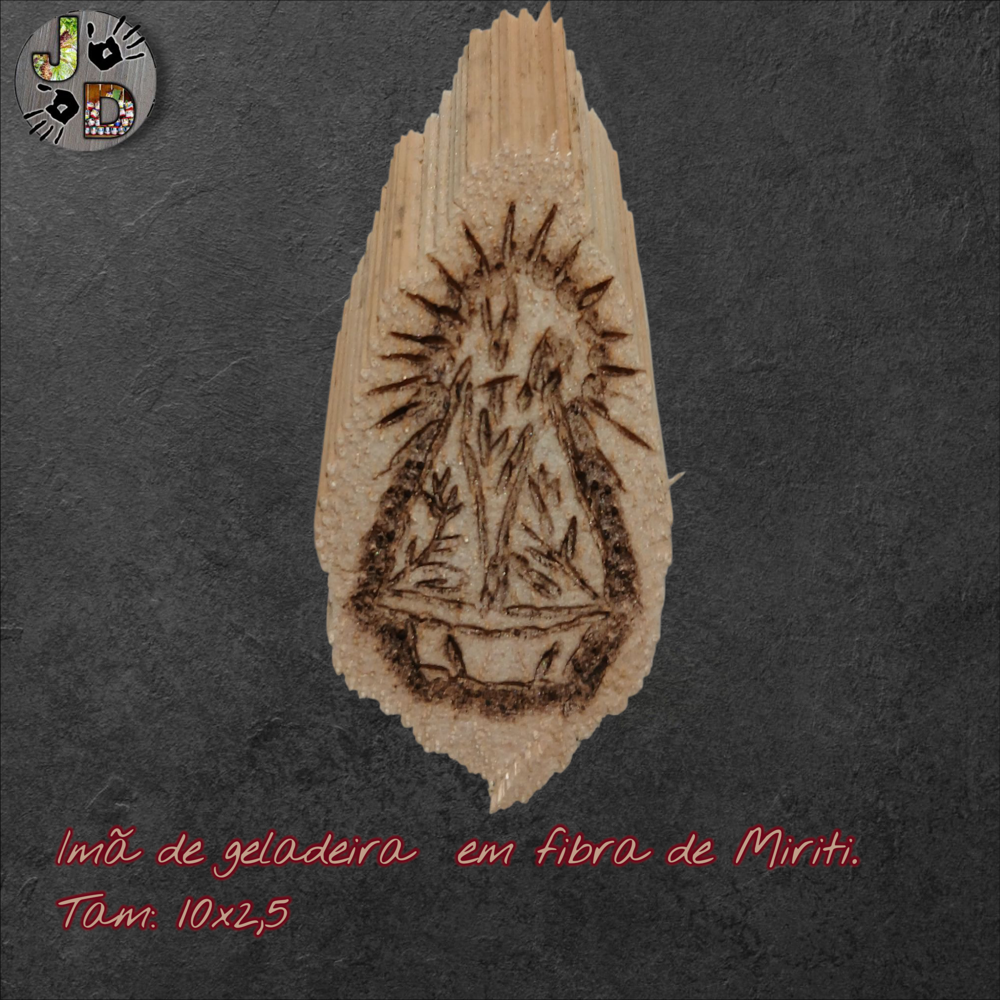
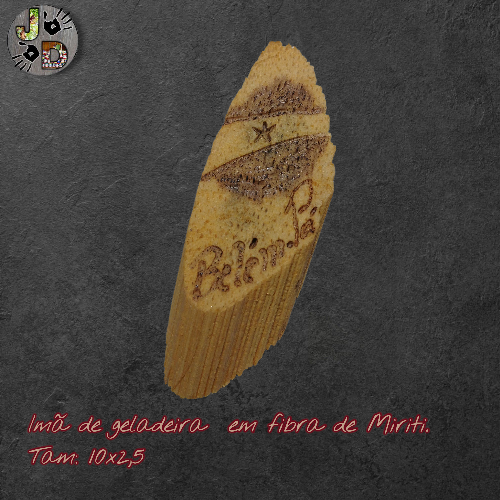
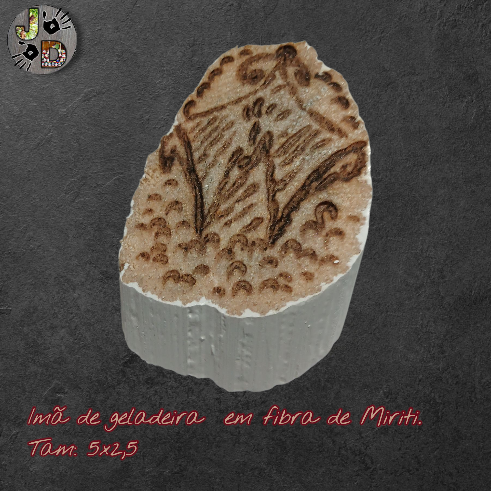
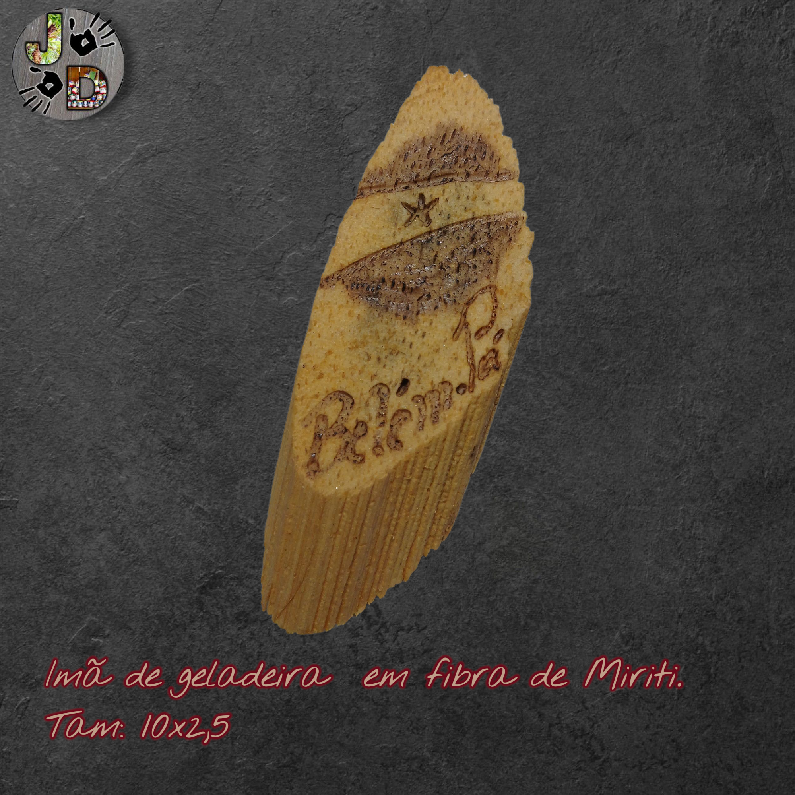
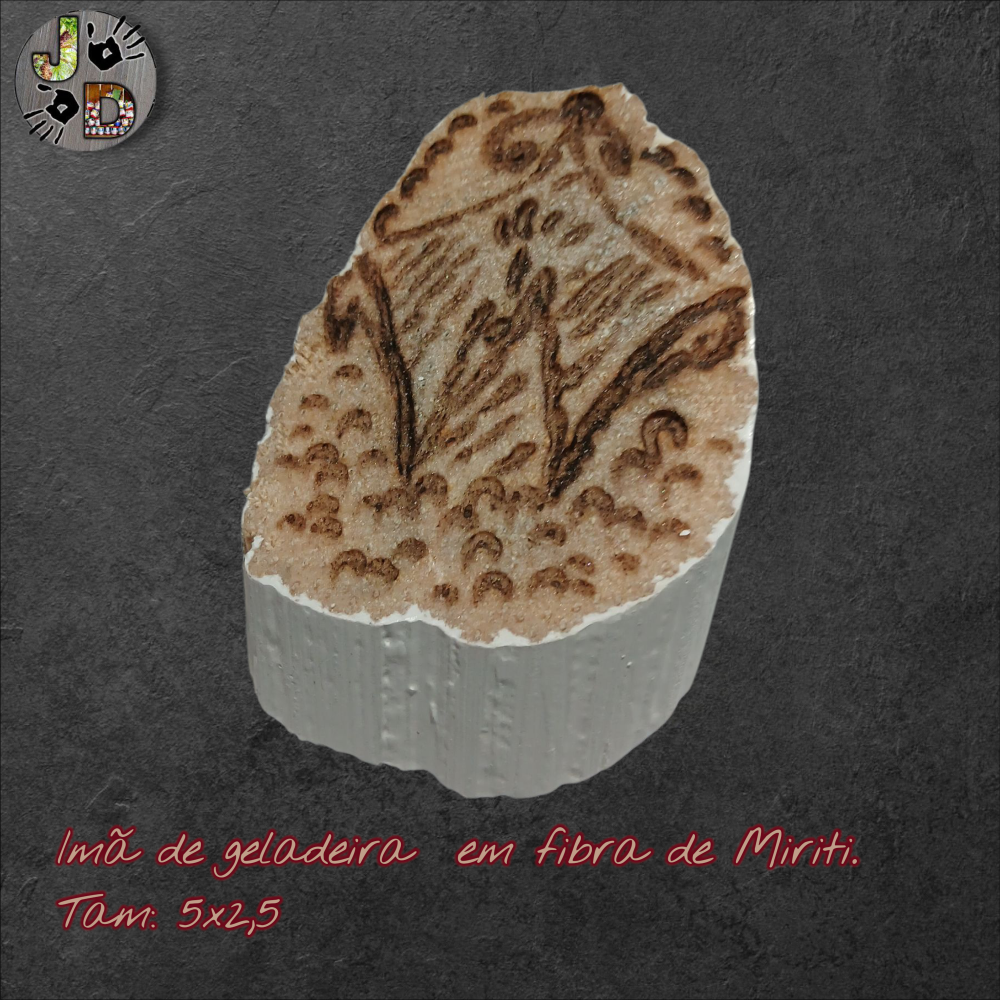

Imãs de Geladeira


 

 



Imã de geladeira artesanal em cerâmica vidrada com ímã de neodímio embutido e base em madeira reciclada.
Imãs de Geladeira: Pequenas Peças, Grande Impacto
Imãs de geladeira artesanais podem parecer mero acessório decorativo, mas reúnem elementos de design, utilidade e lembrança afetiva. Partindo de materiais diversos — feltro, tecido, cerâmica, resina, madeira, ímã plano —, estes objetos oferecem ao artesão o espaço para expressar mini-cenários, formas geométricas, temas regionais ou personalizados. Um guia de ideias práticas reúne dezenas de técnicas “DIY” para transformar tampas de garrafa, cápsulas de café, peças cerâmicas e até restos de quebra-cabeças em imãs úteis. :contentReference[oaicite:2]{index=2}
Elaboração e Aspectos Técnicos
Para produzir um imã de geladeira artesanal com profissionalismo, o artesão precisa considerar: adesão segura do ímã (preferencialmente ímã de neodímio, forte e fino), acabamento com selante ou verniz (quando se usa cerâmica ou resina), e dimensionamento adequado para função (apenas segurar papéis leves ou atuar como peça decorativa). A personalização pode envolver pintura manual, decalques, colagens de pequenos objetos ou moldagem em silicone. O diferencial comercial aparece quando o imã transmite uma história ou um tema local, como fauna/flora brasileira ou design exclusivo de miriti.
Aplicação Comercial e Potencial de Venda
Passar de “lembrancinha simples” para “artesanato de marca” exige algum posicionamento: embalagem personalizada, história da peça, série limitada, edição temática (ex: “imãs – fauna da Amazônia”). Em sua estratégia para divulgar no LinkedIn ou TikTok, JD, os imãs podem ser mostrados em vídeos de produção, antes e depois, com destaque para detalhe “feito à mão” e a história por trás (ex: madeira de miriti, ou técnica local). Isso gera valor percebido e diferenciação em marketplace. A leveza logística (peça pequena, leve para envio) é outro ponto positivo.
Fonte: 23 DIY Magnet Ideas That Will Instantly Spruce Up Your Fridge – CraftToMake. :contentReference[oaicite:3]{index=3}